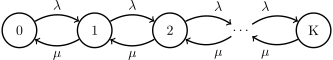
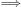
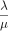
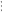
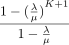
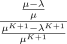
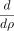
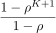
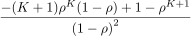

Consider a queue receiving requests with exponential (memory-less) inter-arrival distribution and exponential service time. There is only one service node and the maximum buffer size is K. This system is represented with M∕M∕1∕K Kendall’s notation. The request are either received and placed in the queue or they are blocked. If the request are received, then they will not live the queue until they are serviced. In this post, a basic analysis of the system is performed.

We can write balance equation for this CTMC.
| λπ0 = μπ1  π1 = π0 | |||
| (λ + μ)π1 = λπ0 + μπ2 π2 = π1 | |||
|  | |||
| πi = πi−1 |
According to equations, we can see that the stationary probability of state i is calculated as below.
| (1) |
Sum of stationary probabilities should be one. By solving this equation we can figure out the value for π0. By knowing π0 we can calculate other πi (eq. 1).
| (2) |
Steps for solving the eq. 2 are given below.
| ∑ i=0Kπ i = 1 | |||
| ∑ i=0K()iπ 0 = 1 | |||
| π0 ∑ i=0K()i = 1 | |||
| π0() = 1 | |||
| π0 =  |
Values for stationary probabilities are calculated as shown below.
| (3) |
Now that we know the stationary probability for M∕M∕1∕K queueing systems, we can calculate the probability of request arriving to a full queue. In this case the request are blocked (dropped) and not serviced.
| (4) |
The throughput of the system is same as the rate of request placed into the queue. If we discard the request that are blocked, the rest of requests will eventually exit the system.
| (5) |
| E[N] = ∑ i=0Kiπ i | |||
| E[N] = ∑ i=0Ki()i | |||
| E[N] = ∑ i=0Ki()i | |||
| E[N] = ×∑ i=0Ki()i−1 | |||
| ρ = | |||
| E[N] = ×∑ i=0K(ρ)i | |||
| E[N] = × ×∑ i=0K(ρ)i | |||
| E[N] = × × | |||
| E[N] = × × | |||
| … |
Now that we have calculated the expected number of request in the queue we can use Little’s law to obtain the expected request response time. This rule simply states that the expected number of request in the system (expected size of the queue) is same as the rate of incoming requests to the queue times the expected time a request spend in the system.
| λ′ = (1 − PBlock)λ | |||
| E[N] = λ′E[T] |
| (6) |